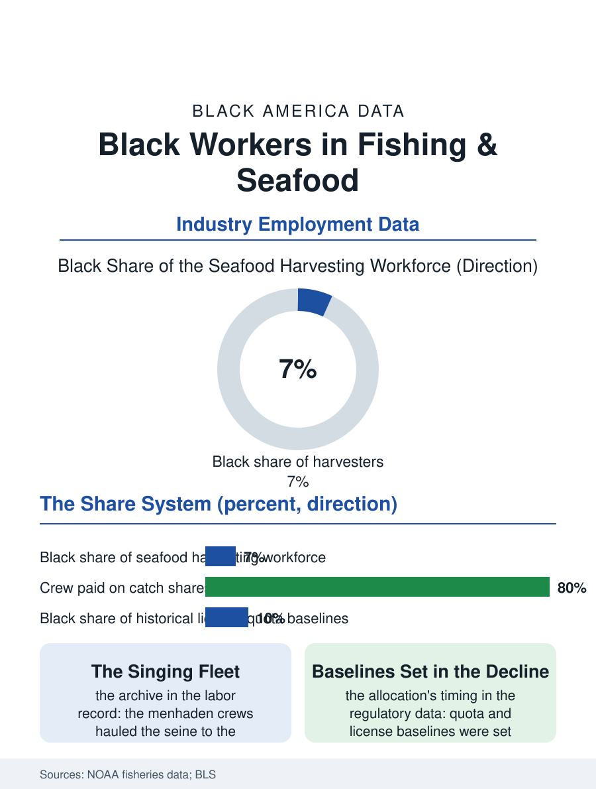

Black Employment
On Shares: Black Workers in the Fishing Industry
The singing menhaden fleets, the share system's ancient contract, and quota baselines set in the decline years: the fishing file's work record. The fishing file.

Black watermen have worked the Chesapeake's oyster and crab fisheries since the colonial era, and Black crews built substantial parts of the Gulf's shrimp and oyster fleets and the menhaden fishery's singing fleet, in an industry whose current Black share is small and whose independent harvester tradition is contracting with the fisheries themselves. The earlier watermen file in this atlas read the communities; this one reads the work. This article reads the fishing file.
The Fleets' Labor
The menhaden fishery's file is the industry's musical footnote and its labor record in one: the purse seine crews of the reduction fishery, overwhelmingly Black from the Chesapeake to the Gulf, worked the nets to the chanteys, the work songs whose rhythm hauled the seine, a tradition the folklorists recorded as the last great corpus of African American work song, sung by crews whose wages and shares the fishery's company structure set at the industry's bottom. The oyster fleets employed Black tongers and shuckers across the bays, the shucking houses' piece rates a women's economy in the packing towns, while the crab and shrimp fisheries' Black crews and captains built the small fleet ownership tradition the watermen file's communities stand on. The modern industry's labor data reflect the fisheries' contraction and mechanization: the seafood harvesting workforce's Black share in the federal data runs in the single digits nationally, concentrated in the Gulf and South Atlantic fleets, its independent operators aging with the fleet, the deckhand labor increasingly the immigrant workforce of the processing file's, and the charter and recreational sector, the fishing guides and head boat crews of the coastal tourism economy, the growth segment whose Black captains are the industry's most visible current operators.
Seasons, Shares, and Storms
The fishing economy's structure is the file's constant: the harvester's income is a share of the catch, the lay system dividing the trip's proceeds among owner, boat, and crew in the proportions the fisheries' customs set centuries ago, so that the crew's wage carries the resource's volatility entire, the bad season and the closed fishery landing on the deckhand's share with no floor. The regulatory file, the catch limits and the license moratoria that now govern the fisheries' sustainability, capitalizes the right to fish into the license and the quota share, assets the historical Black fleet largely does not hold in proportion to its history, the allocation baselines having been set in the years of the fleet's contraction, a distribution the fisheries' equity reviews have begun, belatedly, to audit. The storm file is the industry's climate chapter: the Gulf fleet's Black communities stand in the hurricane corridor's front rank, the boats and the shoreside infrastructure, the ice houses and the docks, carrying damage the recovery programs reach slowest, and the oyster grounds' own collapse under the freshwater and harvest pressures has idled the tonging fleets of the very bays the Black watermen's tradition is oldest on.
The Last Chanteys
The fishing file closes where the work songs did, on the water at dawn: the industry's Black remnant is small, its traditions outsized, its future tied to the fisheries' own survival under the climate and regulatory files' pressures. The aquaculture sector, the oyster farms and the finfish operations growing in the coastal data, hires on a wage model the wild fishery never offered, and its Black workforce and ownership are the industry's open chapter, the water's version of the land file's new farmers, working a controlled crop where their grandfathers hunted a wild one. The heritage economy pays its own small dividend, the maritime museums and the heritage fleets employing the retired watermen as the tradition's licensed interpreters, the chantey sung now for the school groups on the dock it once hauled nets to. The bureau counts the harvesters and the processors in the industry's tables. The file's last measure is the tradition's: a work culture that put its rhythm section on the seine boats of two coasts, whose songs are in the national archive and whose boats are in the family photographs of three states' Black coastal towns, still sending its few crews out in the dark, on shares, as the contract has read since before the Republic, the oldest employment terms in this atlas still in force at the dock.
More in Black Employment
The Black Unemployment Rate: The Two-to-One Pattern
Black unemployment runs at roughly twice the White rate — 5.5 percent against 3.3 percent in annual averages — a ratio stable across five decades of federal data. How it is measured and why it persists.
Black Median Weekly Earnings: The 80-Cent Ratio
Black full-time workers earn a median of about $900 a week — roughly 80 cents for every dollar White workers earn. The BLS earnings data by group, gender, and occupation.
Black Labor Force Participation: Working at National Rates
Black labor force participation runs at roughly the national rate — and Black women participate at higher rates than White women. The BLS participation data.
Source: National Oceanic and Atmospheric Administration fisheries statistics; Bureau of Labor Statistics industry data; maritime heritage records.